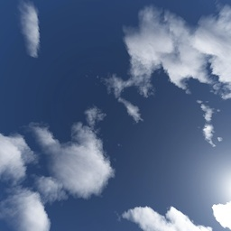
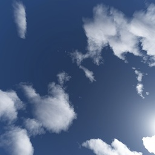

Loading...
Maxwell's Equations
Tim Drysdale
Live calculations of Maxwell's Equations using the finite-difference time-domain method, running
directly on the graphics card.
Interactions:
- Drag the background to rotate the camera
- SPACEBAR pause/unpause
- Drag the spheres to move
- W - write on/off
- Z,X - toggle each sphere height
- D - change writing mode
- Y - write line
- E - change field displayed
- L - set the light direction
- G - toggle gravity
- S - single step
- R - reset fields
- Shift+R reset fields and geometry
- O - reset object size
- V - toggle voltage source
- C - toggle persistant sources
- J/K - lower/increase frequency
- N/M - lower/increase magnitude
Features:


 
